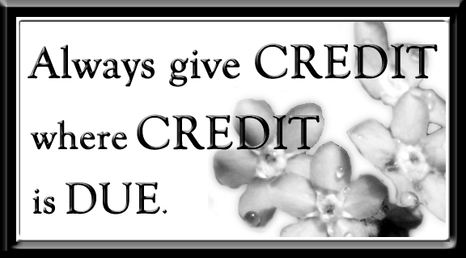

Credits
- Information sources
-
HTML Information
CSS Information
Coding Tools
- To get Firebug, get Firefox Click here
- External site links
-
HTML Validator
https://jigsaw.w3.org/css-validator/ - Images
-
Home Image
HTML Validator image
CSS Validator image
Firebug Image
SynWrite Gif
Consistancy image
HTML and CSS image
Credits page image
Form image
Back to top image
Back to top scrolling help
Favi-con image